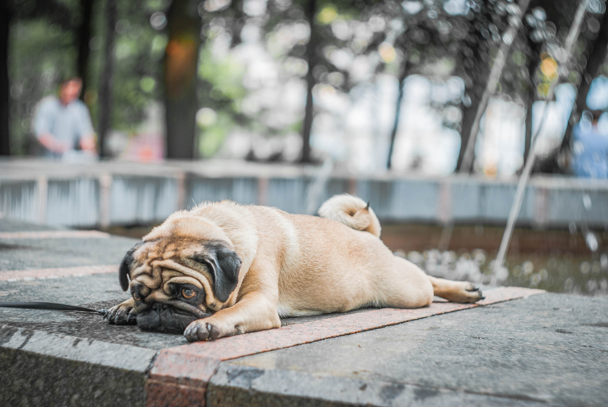
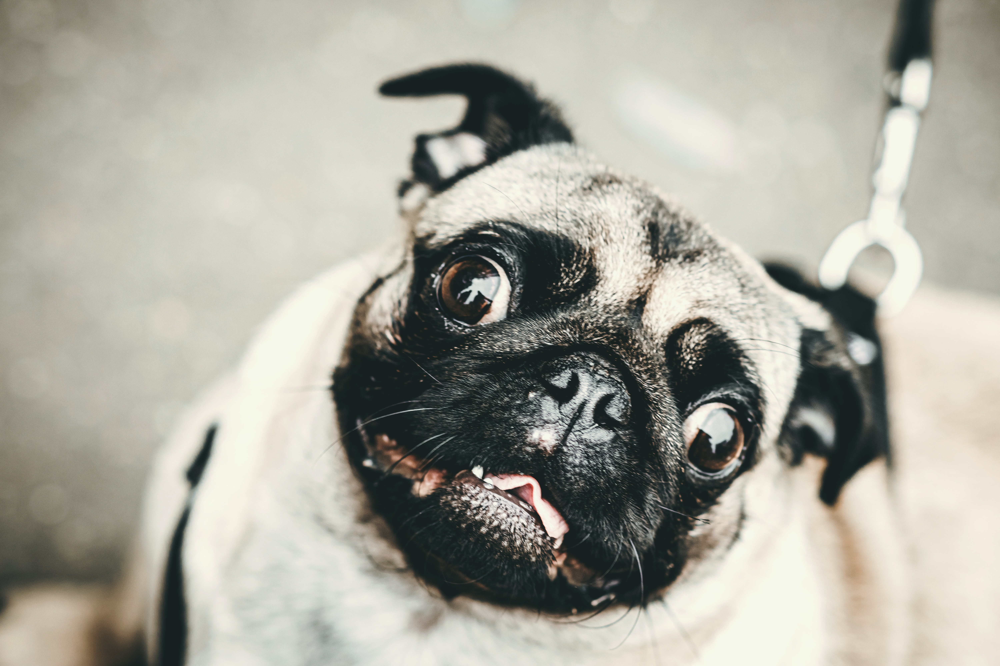

Mopsovi potiču iz Kine datirajući iz vremena dinastije Han (od 206. godina pre Hrista do 200. godine za vreme Hrista). Neki istoričari veruju da su povezani sa tibetskim mastifima. Bili su jako cenjeni od strane kineskih careva i živeli su u luksuznim odajama, a ponekad su ih i čuvali i vojnici. Spadaju u jednu od tri vrste pasa sa kratkom njuškom za koje je poznato da su kinezi uzgajali: lavlji pas – pekinezer i pas pod nazivom Lo sze (koji se smatra drevnim mopsom). Određeni veruju da su čuveni kineski „Foo“ psi predstavljali drevne mopseve. Dokazi o malim psima nalik mopsu pronađeni su u drevnom Tibetu i Japanu.
Svojim komičnim izgledom i smešnim izrazom lica, mops će vas osvojiti istog trenutka kada ga ugledate. Šarmom i luckastim pogledom učiniće da ne možete da odvojite pogled od njega. Telo mu je snažno i mišićavo (kvadratno, zdepasto), prekriveno mekom i kratkom dlakom. Mladeži na obrazima nazvani su lepotom ove vrste. Njuška i maska oko očiju je crna sa jasno definisanom oznakom na čelu i crnim tragovima duž centra leđa. Uši su glatke, crne i baršunaste. Ima karakterističnu isturenu donju vilicu i čvrsto zakrivljen rep.Karakterističan je po spoljštenoj njušci i velikim, širom otvorenim očima. Standardna visina je od 25 do 30 cm, a težina od 6 do 9 kilograma.
Komično lice mopsa, sa dubokim borama oko velikih, tamnih očiju i ravnim, okruglim licem ne može a da vas ne nasmeje. Veruje se da ime potiče od latinske reči koja znači „pesnica“, budući da njihova faca podseća na ljudsku pesnicu. Mopsevi su pravi klovnovi u duši, ali sa dostojanstvenim ponašanjem. Razigrani su, spremni i sposobni za zabavu, ali moraju biti voljeni i bliski sa svojim ljudima, dakle potreban im je konstantan ljudski pratilac (obožavaće da vas prate po kući, da vam sede u krilu i spavaju sa vama u krevetu). Takođe, vole biti u centru pažnje i jako pate ako su izignorisani. Nemojte od jednog mopsa očekivati da vam služi kao čuvar ili neko ko će donositi stvari. On je pre svega i odgajan da bude najbolji prijatelj čoveka. Za obuku se preporučuje upotreba kaveza, za šta se morate informisati kod profesionalnog dresera. Kao i kod svakog psa, tako se i kod ove pasmine preporučuje blagovremena i ispravna socijalizacija. Duboke bore na licu nose određenu simboliku. Legenda kaže da su Kinezi uprave te bore smatrali simbolom sreće. Oni su posebno vrednovali pse čiji su nabori na licu „formirali“ reč princ na kineskom jeziku. Po temperamentu su mudri, razdragani i nežni, odani i šarmantni, društveni i nestašni. Vrlo su inteligentni, ali umeju biti i tvrdoglavi što čini njihovu dresuru pravim izazovom. Mogu biti dobri čuvari, premda nisu veliki lajavci, što će se posebno svideti vašim susedima. Iz razloga što spadaju u malu, smirenu rasu i što su relativno neaktivni u zatvorenom prostoru, odličan su izbor za one koji žive u stanu, kao i za starije osobe. Dakle, biće vam savršeni kompanjoni dok čitate knjigu ili gledate film. Ipak, ovo ne znači da su u potpunosti pasivni. Naprotiv. Svog vlasnika će stalno zabavljati novim ludorijama. Zbog pljosnate njuške, ne podnose dobro izrazito vruće ili izrazito hladno vreme, što ih svakako čini kućnim psima (kod pasa sa dužim njuškama vazduh se prolazeći kroz nos hladi, pre nego što dospe u pluća). Kada je vaš mops na otvorenom, pažljivo ga posmatrajte zbog potencijalnog toplotnog udara. Znaju ispuštati glasne zvukove poput hrkanja, šištanja i krkljanja, tako da, ako imate lak san – obavezno nabavite čepiće za uši. Što se tiče hrane, pravi su halapljivci i mogu pojesti veliku količinu ukoliko im to dozvolite. Skloni su gojenju, što nikako nije dobro za zdravlje, pa im zato redovno kontrolišite unos namirnica.
Mopsevi imaju kratko, ali dvoslojno krzno. Uglavnom su žutosmeđe ili crne boje. Žutosmeđi imaju nijanse boje kajsije ili srebrnkaste, a svima je njuška kratka, crna i spljoštena. Iako imaju kratku i glatku dlaku, nemojte da vas ovo zavara jer se mopsevi nenormalno linjaju, naročito leti, pa budite spremni na čestu upotrebu dobrog usisivača. Vlasnici ovih pasa vrlo dobro znaju da je najbolje rešenje da nose svetliju odeću, kako bi se dlake manje primećivale. Redovno četkanje i kupanje pomaže da se linjanje svede na minimum. Redovno sečenje noktiju je obavezno, budući da su ovo kućni psi i nemaju, kao psi koji provode više vremena napolju, često priliku da ih „isturpijaju“. Uši čistite na svakih par nedelja. Ono što zahteva posebnu negu su nabori na njihovom licu. Ovi nabori podložni su infekcijama ukoliko su mokri ili prljavi. Nakon svakog kupanja ih temeljno osušite, a između kupanja redovno brišite. Neki vlasnici za to jednostavno koriste samo suvu, pamučnu vatu, a drugi vlažne maramice za bebe. Osim toga, njihovim isturenim očima potrebna je dodatna pažnja. Zbog toga što su ispupčene, izuzetno su podložne povredama i iritacijom od sapuna i hemikalija. U obavezno posmatranje spada redovna kontrola kože, šapa, zuba, nosa, usne duplje, očiju.U neke od bolesti koje najčešće pogađaju pasminu mops spadaju šetajuća perut, encefalitis kod mopseva, idiopatska epilepsija, degeneracija nerava, čir rožnjače, suvo oko, problemi sa očima, alergije, demodikoza, infekcija stafilokokama, gljivične infekcije, hemivertebra, displazija kukova, Leg Perthes oboljenje, luksacija patele i osetljivost na vakcine.
